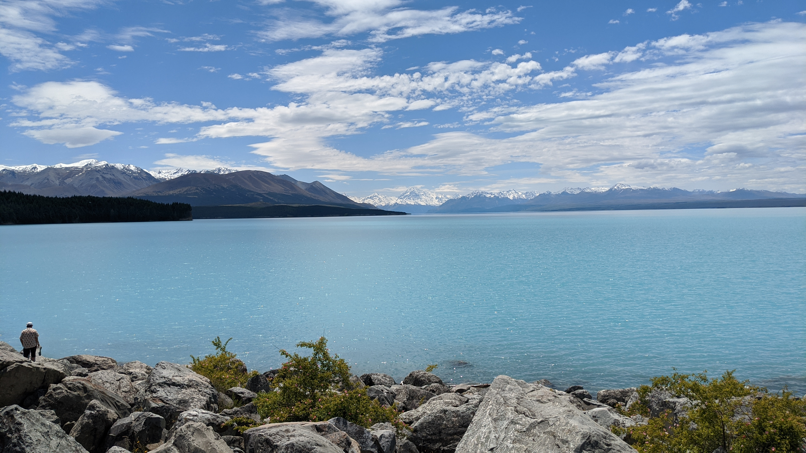
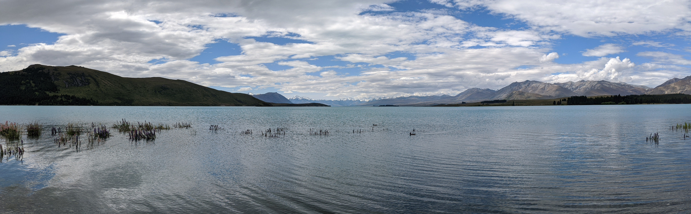
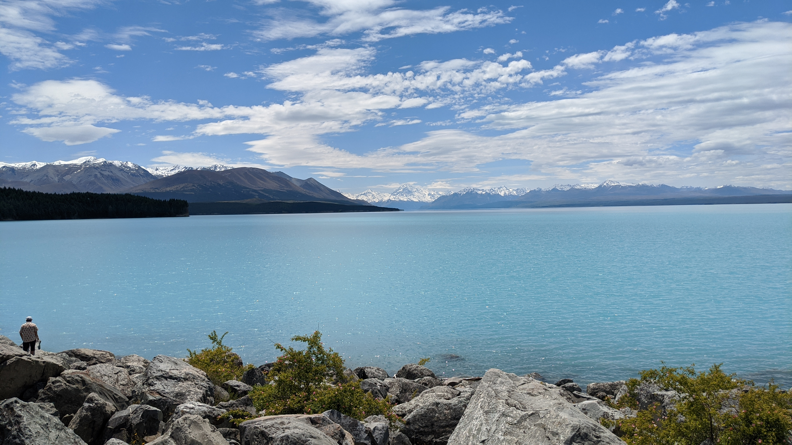
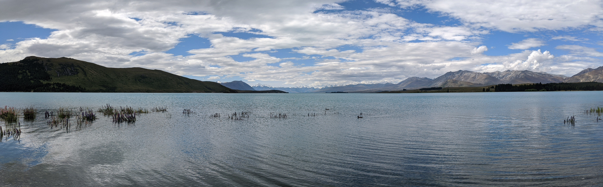

Travel Notes
紐西蘭旅行日誌紐西蘭
 



於十二月初秋冬季 我與我哥出發至紐西蘭來一場放鬆之旅。從桃園搭機經過兩次轉機後終於來到紐西蘭的南島皇后鎮，起初以為會一直下雨 因為前幾天當地報導近天氣不佳常下雨造成多處淹水這也導致要來接我們的巴士無法從基督城來到皇后鎮,本來想到解決的方法是搭Uber與司機會合 沒想到當地剛好有司機的朋友困在皇后鎮無法回去基督城再商討後他答應成為我們的臨時司機而且後面的旅行幾乎都沒下雨 真的很幸運。